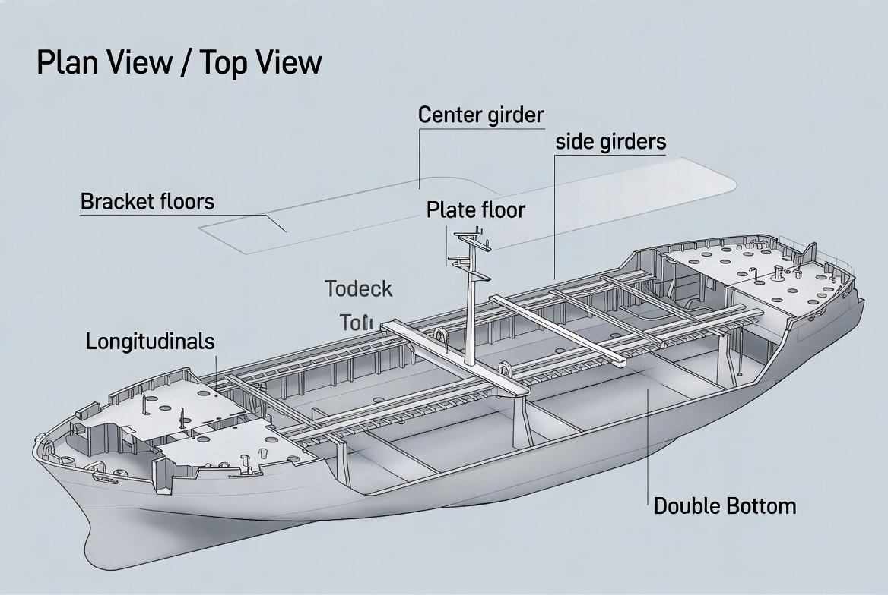
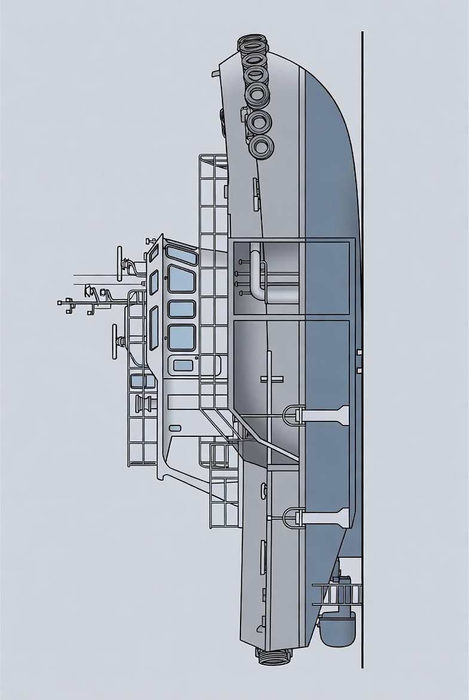
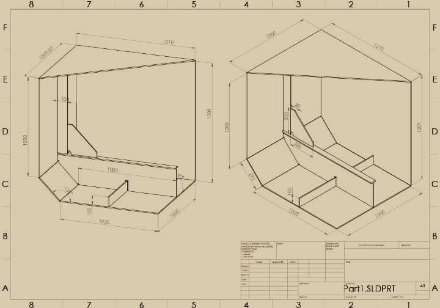
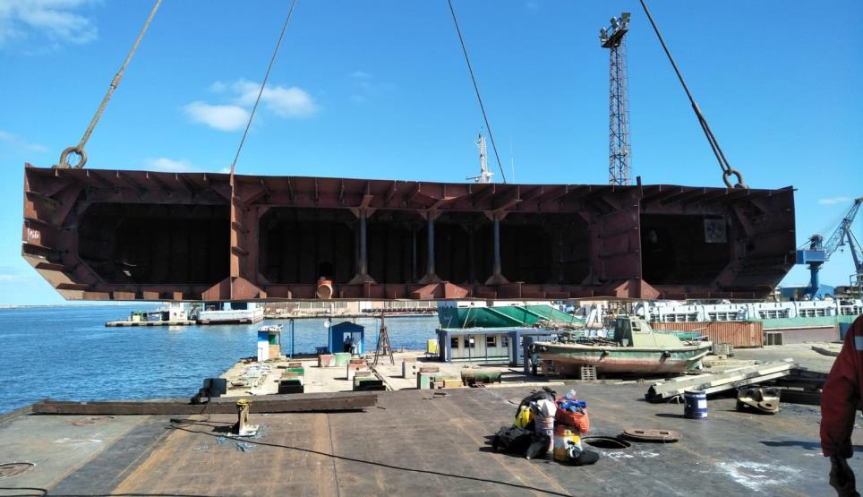
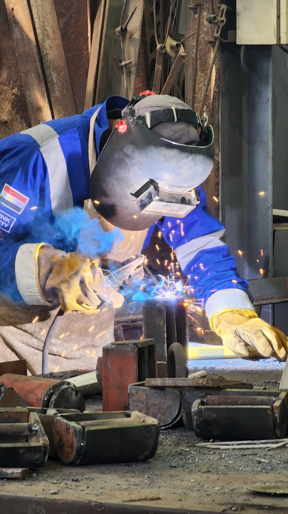
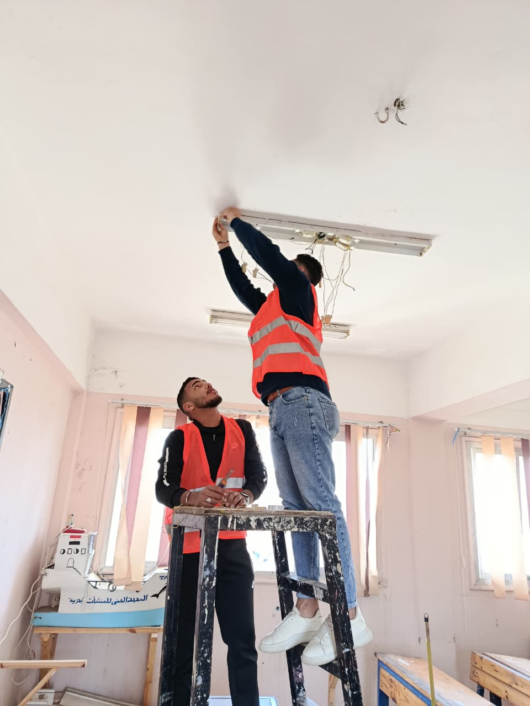
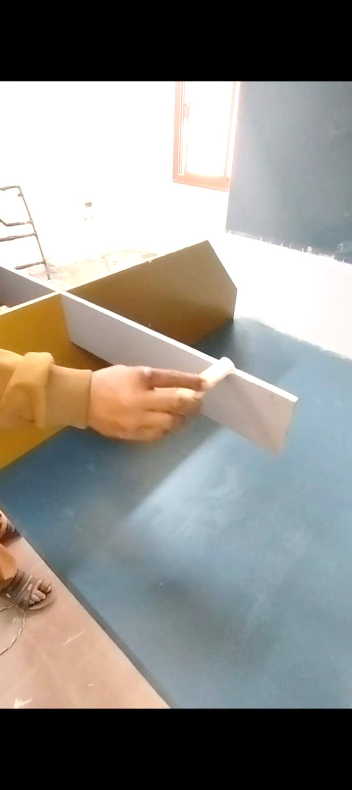
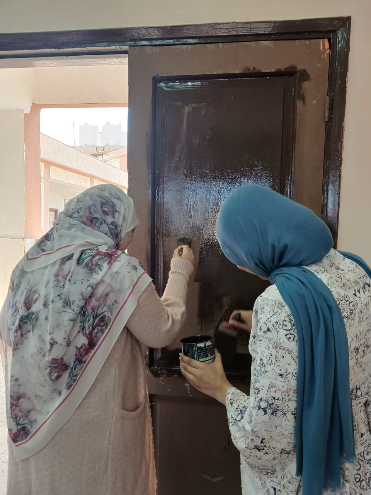
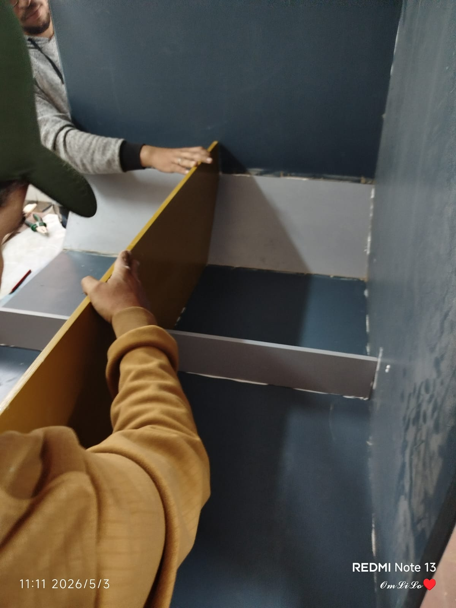
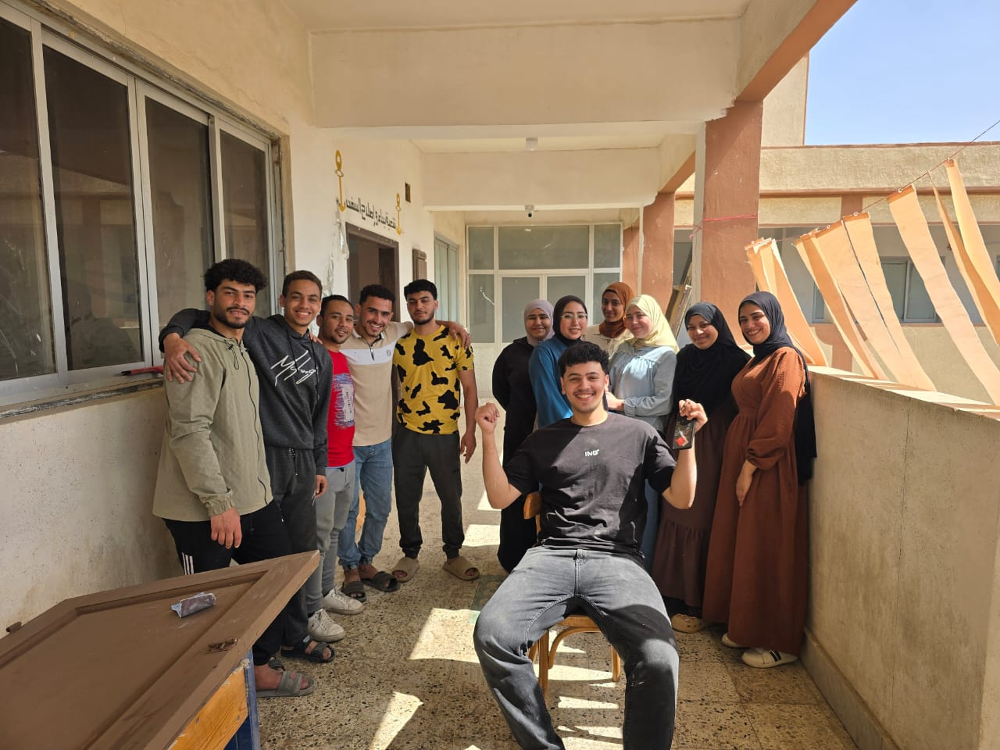

بسم الله، نقدّم لكم
نموذجٌ
لهيكلٍ حديدي
لقاطرةٍ بحرية.
نموذج إنشائي يحاكي السلوك الحقيقي لقطاع من قاطرة بحرية بقوّة شدّ ٧٠٫٠٠٠ طن — من القرينة إلى الألواح الجانبية، يعمل كجسدٍ واحد لمواجهة قوى البحر.
اقرأ المشروعتصميم محوره الهيكل
تحقُّق نظري ورقمي من قدرة التصميم على تحمّل ضغط المياه والأحمال المركّبة دون انهيار.
دراسة الإجهادات
تحليل توزيع الإجهادات في الدعامات والكمرات والوصلات لتحديد النقاط الأضعف.
لحام صناعي دقيق
ربط ألواح الفولاذ بدقّة لضمان قوّة الهيكل ومقاومته للظروف البحرية القاسية.
أثرٌ يبقى
مشروع خدمي مرافق داخل الشعبة والمكتبة — نتركها أفضل ممّا وجدناها.
أشخاص جعلوا ذلك ممكناً
تحت إشراف عميدة المعهد بشمهندسة سوزان مجدي، وتوجيه بشمهندس معتز، وبعمل فريق متكامل من شعبة هندسة بناء وإصلاح السفن — دفعة ٢٠٢٦.
المعهد الفني
بناء السفن
المكتبة
ورشة اللحام
قسم الإناره
قسم الدهانات
فريق التنفيذ
طلاب الشعبة
هندسة الفولاذ،
حماية الحياة.
الهيكل الحديدي هو الدِّرع الذي يفصل بين الحياة والموت في أعالي البحار، وهو الشاهد الأول على عظمة الهندسة البحرية وتطوّرها.
يُعدّ الهيكل الحديدي للسفينة المعجزة الهندسية التي غيّرت مجرى التاريخ البشري؛ فهو الجسر الصلب الذي ربط القارات وحوّل المحيطات من عوائق مستحيلة إلى طرق ممهّدة للتجارة والاستكشاف. إنّ الهيكل ليس مجرّد وعاءٍ للمحرّكات والبضائع، بل نظامٌ إنشائي متكامل صُمّم ليكون مرناً بما يكفي لامتصاص صدمات الأمواج، وصلباً بما يكفي لمقاومة ضغوط هائلة لا ترحم.
تكمن عبقريّة الهيكل في قدرته على تحقيق معادلة صعبة: توزيع الإجهادات. فكل قطعة فولاذية — من «القرينة» (Keel) أساس السفينة، وصولاً إلى الألواح الجانبية (Shell Plating) — تعمل معاً كجسدٍ واحد لمواجهة قوى فيزيائية معقّدة.
أربعة أجزاء، جسدٌ واحد.
كل جزء له دور إنشائي محدّد، لكنها معاً تعمل كنظام متكامل لمواجهة قوى البحر — قاطعة الأمواج، حاملة الضغط، الانسيابية، والعمود الفقري.

القاع
Hull Bottom — حامل ضغط المياه والأحمال الرئيسية ٢٠٢٦ العمود الفقري
الكويرتة
Bow Flare — انسيابية المقدّمة وتوجيه المياه ٢٠٢٦ هيدروديناميكا
جانب السفينة
Hull Side — العزل والتحمّل والتوازن (Starboard / Port) ٢٠٢٦ عزل وحمايةقوى تحت الماء.
يمثّل الهيكل الحديدي الدعامة الأساسية التي تتحمّل مختلف الأحمال أثناء التشغيل — منظومةٌ معقّدة من الإجهادات الناتجة عن تفاعل الأحمال الداخلية مع الظروف البحرية.
٠١
الإجهادات الطولية
Longitudinal Stressesتؤثّر على طول السفينة من المقدّمة إلى المؤخّرة، تنتج من توزيع الحمولات وتأثير الأمواج (Hogging & Sagging). في الـ Hogging يكون منتصف السفينة لأعلى، وفي Sagging لأسفل — شدّ وضغط متبادل على الألياف الطولية.
٠٢
الإجهادات العرضية
Transverse Stressesتؤثّر على عرض السفينة من جانبٍ إلى آخر، نتيجة ضغط المياه الجانبي وتوزيع الأحمال داخل المقاطع العرضية. تؤثّر مباشرةً على الدعامات والحواجز العرضية (Bulkheads).
٠٣
إجهادات القصّ
Shear Stressesتنشأ عن قوى متعاكسة تؤدّي إلى انزلاق طبقات الهيكل فوق بعضها. تظهر في مناطق اتّصال الألواح، اللحامات والمسامير، ومناطق انتقال الأحمال.
٠٤
إجهادات الالتواء
Torsional Stressesتنتج عن تعرّض السفينة لعزم التواء حول محورها الطولي بسبب توزيع غير متماثل للأحمال أو أمواج غير منتظمة — تؤثّر على صلابة الهيكل واستقراره.

ربط القطع، صنع الهيكل.
Welding — The art of joining steelاللحام عملية أساسية في صناعة السفن، لأنه الوسيلة الرئيسية لربط وتصنيع الهياكل المعدنية. تعتمد السفن الحديثة على دقّة وصلابة اللحامات لضمان قوّة الهيكل ومقاومته للأحمال والظروف القاسية.
يُستخدم في بناء الهيكل (لحام الألواح المعدنية لتشكيل البدن)، وفي إصلاح الأضرار (الثقوب والشقوق)، وفي تركيب الأنظمة (الأنابيب والخزانات).
٠١
لحام القوس الكهربي · SMAW
الأكثر استخداماً — قوسٌ كهربي بين قطب وقطعة العمل يصهر المعدن. سهل، يعمل في بيئات مختلفة، ومناسب لمعظم المعادن.
٠٢
لحام القوس المغمور · SAW
يُستخدم للحامات الطويلة والسميكة في ألواح القاع والجوانب — جودة عالية وإنتاجية أكبر.
٠٣
لحام غاز الكربون · MIG/MAG
سريع ومرن للأشغال متوسّطة السماكة وداخل الورش، مع تحكّم جيّد في حوض الانصهار.
ما لم يكن سهلاً
واجهتنا صعوبات في دقّة القياسات وتناسب الأجزاء، فاستغرقنا وقتاً طويلاً في معايرة الأبعاد لتعكس المواصفات الحقيقية للوحدة. وكان التنسيق بين الفريق وتوزيع المهام تحدّياً تنظيمياً مع ضيق الوقت — لكنّ هذه التحدّيات كانت فرصةً حقيقية لتعلّم الصبر وحلّ المشكلات والعمل الجماعي.
من يوميّات الفريق
ثمانية مبادئ، عشناها.
فهمنا أن التصميم الجيّد أساس الأمان، وأنّ جودة التنفيذ تساوي جودة الفكرة — وأنّ الصيانة الدورية والاختيار الذكي للمواد يطيلان عمر الوحدة البحرية.
تحمّل الأحمال
الهيكل يجب أن يُصمَّم ليتحمّل الأحمال المتغيّرة دون انهيار أو تشوّه دائم.
مقاومة التآكل
اختيار الفولاذ المناسب وأنظمة الطلاء يحميان من الصدأ في بيئة بحرية قاسية.
أهمية التقويات
الـ Stiffeners الطولية والعرضية تمنع الانبعاج وتوزّع الإجهادات.
جودة اللحام
اللحام لازم يكون دقيقاً ومُختبَراً — وصلةٌ ضعيفة تعني هيكلاً ضعيفاً.
صيانة دورية
الفحص المستمرّ يكشف الشروخ والصدأ والتآكل قبل أن تتحوّل إلى أعطال.
توزيع الأحمال
التوزيع المتوازن يحمي من الإجهادات المركَّزة في نقاط محدّدة.
اختيار الحديد
درجة الفولاذ ونوعه يحدّدان أداء الهيكل في مواجهة الظروف القاسية.
البيئة البحرية
الملوحة والرطوبة والحرارة تتآمر على الهيكل — وعلينا أن نسبقها بالتصميم.
من الفكرة إلى الفولاذ.
لقطات من مراحل التصميم، التجميع، التقفيل واللحام — حتى الوصول إلى النموذج النهائي.
أثرٌ يبقى.
The Service Project — Leaving the place betterإلى جانب النموذج الإنشائي، نفّذنا مشروعاً خدمياً داخل شعبة بناء وإصلاح السفن والمكتبة التابعة للمعهد. لاحظنا أعطالاً في الإنارة، حاجة لإعادة ترتيب الكتب، وعيوباً في الدهانات — فقرّرنا ألّا نترك بيتنا الثاني بدون أن نُصلحه.
- المرحلة الأولى · المعاينة والفحص المرور على الشعبة والمكتبة، تحديد الأعطال بدقّة، وحصر التكاليف.
- المرحلة الثانية · تجهيز الأدوات والخامات تجهيز اللمبات ومفاتيح الإنارة والدهانات اللازمة.
- المرحلة الثالثة · التنفيذ العملي صيانة الإنارة، صنفرة ودهان الجدران والباب، وترتيب كتب المكتبة.
- إجراءات الأمن والسلامة فصل الكهرباء قبل الصيانة، أدوات معزولة، قفّازات، سلّم آمن، وعدم تحميل الدائرة بأحمال زائدة.
النتائج النهائية
- تحسّن مستوى الإضاءة داخل الشعبة بشكل ملموس.
- توفير استهلاك الكهرباء باستخدام لمبات LED.
- عودة المكتبة للعمل بكفاءة وانتظام.
- تحسّن شكل ونظام الشعبة وجاهزيتها للدفعات القادمة.
- توفير بيئة تعليمية أفضل للطلاب.
- تقليل التكاليف المستقبلية للصيانة الدورية.




الأشخاص خلف المشروع.
خرّيجو شعبة هندسة بناء وإصلاح السفن — دفعة ٢٠٢٦. مهما كان المشروع بسيطاً، اعملوه بحبّ وخلّوا فيه لمسةً منكم.

ع
عبدالرحمن محمد البرجيسي
ليدر الشعبة
هذا المكان لم يكن يوماً مجرّد شعبة أو قاعة دراسة، بل كان جزءاً من رحلتنا. أعطيناه من وقتنا وجهدنا، وما كنّا نصنع شيئاً بإجبار — كنّا نعمل بحبٍّ وصدقٍ، رغبةً في أن نترك أثراً وقيمةً تستحقّ أن تُكمَل من بعدنا.
ه
هاجر
ليدر الشعبة
مهما كان المشروع بتاعكم بسيطاً، اعملوه بحبّ وخلّوا فيه لمسةً منكم — لأن الحاجات اللي طالعة من القلب هي اللي بتعيش.
آ
آلاء عيّاد
خرّيجة الشعبة
تركنا لكم أثرَ أيدينا في الخشب، وعِلْمَنا في العَرض... فإذا صنعتم سفينتكم يوماً، فاذكروا أنّ النجاحَ ليس مَرفأً، بل شِراعٌ نمرّره لكم بأيدينا من بعيد.
ر
ريان رياض
خرّيج الشعبة
لقد واجهنا العديد من التحدّيات أثناء التنفيذ، ولكن بالإصرار والعمل بروح الفريق استطعنا إنجاز المشروع. ونتقدّم بخالص الشكر والتقدير لكل من ساعدنا وقدّم لنا الدعم، سواء بالتوجيه أو المتابعة، ونأمل أن يكون هذا المشروع إضافة مفيدة تعكس ما تعلّمناه خلال فترة الدراسة.
س
السعيد
خرّيج الشعبة
لم تكن الرحلة سهلة، لكنّ الإصرار كان دائماً أقوى من كل الصعوبات. واليوم نحتفل بما زرعته الأيّام من تعبٍ واجتهاد — قصّة كفاحٍ تستحقّ أن تُروى بكل فخر.
والله وليُّ التوفيق.
نحمد الله على ما وفّقنا إليه من إنجاز هذا العمل، الذي سعينا من خلاله إلى تقديم فكرةٍ بسيطةٍ ذات معنى وقيمة تخدم مجال هندسة وبناء السفن، وتُسهّل على الطلاب في السنوات القادمة فهم وشرح أجزاء السفينة بصورةٍ عملية ومُبسَّطة.
كان المشروع ثمرة تعاونٍ وجهدٍ جماعي، تعلّمنا خلاله الدقّة والصبر والعمل بروح الفريق، وتغلّبنا على تحدّيات أضافت لنا خبرةً عملية وعلمية مميّزة. نسأل الله أن يكون هذا العمل نافعاً ومفيداً، وأن يترك أثراً طيّباً لكل من يطّلع عليه.
شكراً على القراءة — نَلقَاكُم على البحر.